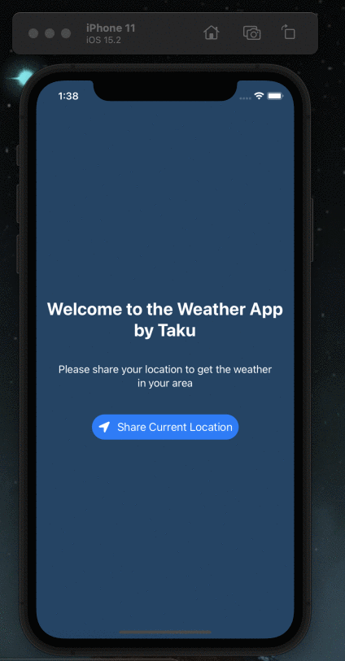

Artificial Intelligence in the Liberal Arts at Amherst College
TOOLS
Please feel free to check out the tools as prepared by our tools team!
How to use the Recordit App!

First, download Recordit from the developer’s website. Installing is very simple, and follows the basic installation set ups of all apps. When you run the app, the icon will be launched on your menubar and not dock (for Mac users).
When you Click on the Recordit menubar icon it will give you options. At first, there will be only Record, Preferences and Quit. After you have used the tool, there will also be a list of your previous recordings as urls which you can click at any time.
To Record select Record. A vertical and horizontal bar will appear which you can move around. Click on your screen area at one of the corners of your intended video boundary and drag around any area on your screen to define the recording area. This is adjustable, so if you make a mistake or need to redefine the boundary, you can drag on the corners.
To begin recording click on the Recordit menubar icon again to start recording. Anything happening within that defined area will then be recorded, sans sound. Be careful: it does not really show that it has started, so don’t wait for a sign, it’s already recording. You can always shorten your recording to capture your intended content though, since it is a video.
To stop the recording, click the menu bar icon a third time. It will then upload to the Recordit servers, saving it and copying the URL to your clipboard. You can then visit the URL to see your recording. You can save the video file to your Mac with a right click, or you can just send along the URL to your friend or co-workers or our forum friends.
On the bottom corner of your recording (after opening it from the link), a gif button will be displayed. Click on the button to make a gif.